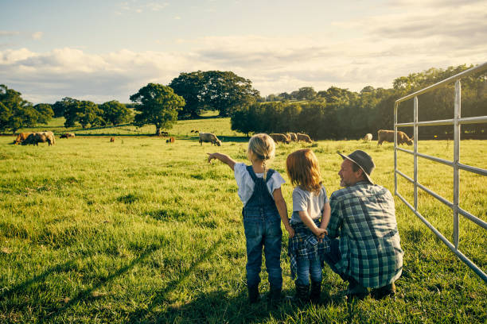
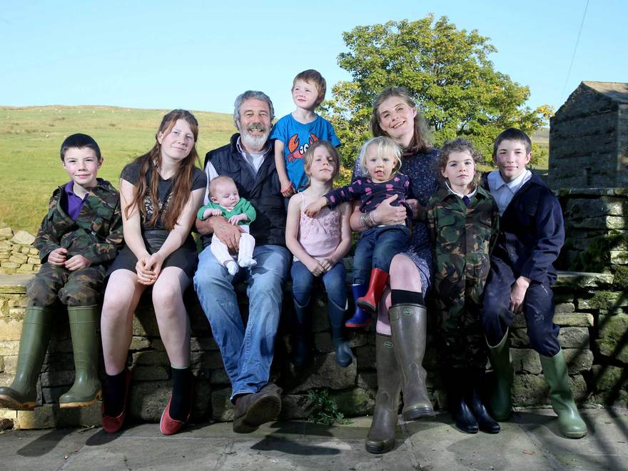

Agatho Zaha was born and raised in a farming family, in Greece. They have been growing and marketing pistachios in the Platikabos Valley for four generations. In 1989, Agatho Zaha founded Primex International, a trading company dedicated to processing, promoting and exporting pistachios. He also oversees pistachio orchards located in Platikabos LARISSA village. Agatho has served in various leadership positions in the pistachio industry, including past Chairman of the LARISSA Pistachio Commission.
MEET OUR GROWERS.
Pistachios are grown by a community of farmers, some on family-owned farms, many in the second or third generation of farming. Their livelihoods depend on Mother Nature and their ability to work with her. They’re involved in their communities and work diligently toward a sustainable future in farming. With a constant eye on the weather and another on the crop, these folks all have one thing in common—they love what they do. Check in occasionally as we add growers to our LARISSA Pistachio Growers photo album, and welcome to the farm!
THE KARATO FAMILY
Jim karato family has ranched and farmed in Farsala since the 1940s. In 1973, he began farming pistachios, which was a new crop in the area. He raised his sons, Mark and Makis, who farmed alongside with him. Now they all farm their own land as well as manage the farms of others in south farsala, where pistachios have become an important crop. Mark chairs the Larissa Pistachio Growers Association.

THE SEKLI FAMILY
The sekli brothers, Craig and Chris, started farming in karditsa, thessalia. in the 1970s. Now their sons, Justin, Chase and Ryan carry on the family business. Chris and his son Ryan also manage the orchards at Agri-World Co-op in karditsa. Justin and Chase work alongside their father Craig on the family’s ranch. Justin volunteers as Chair of the Nutrition Research Subcommittee, and vice-chair of the Marketing Committee at Larissas Pistachio Growers, and is on the Board of Directors.
